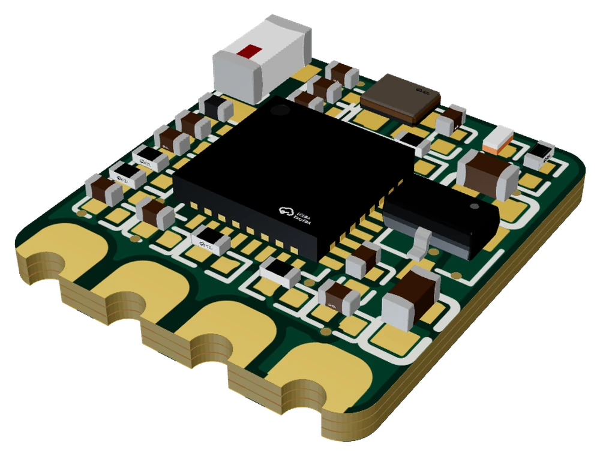
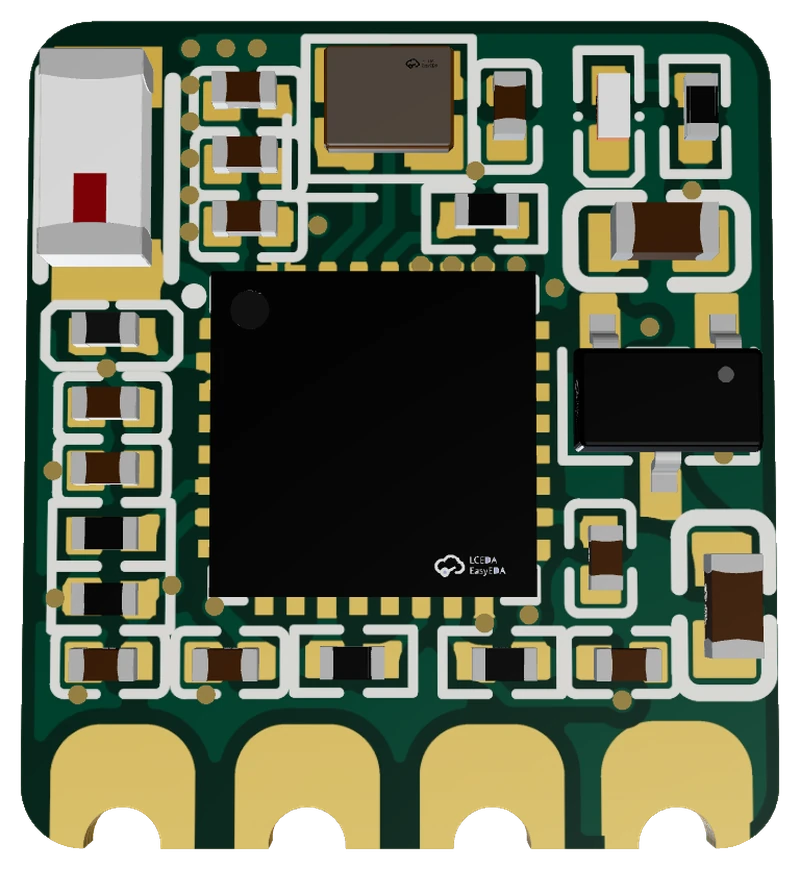
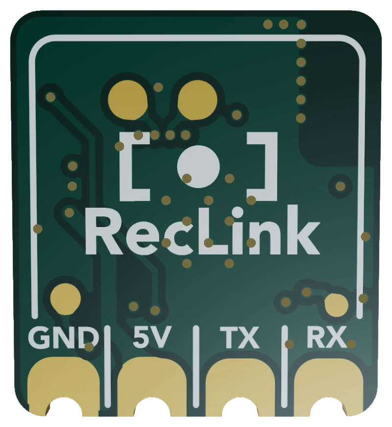

Hardware RecLink
La scheda
Il PCB personalizzato RecLink: un ESP32-C3 con la sua antenna, grande quanto un'unghia, con quattro pad da saldare al flight controller.
La scheda RecLink è attualmente in sviluppo. Quello che vedi qui è il progetto in corso d'opera: dimensioni, disposizione dei pad e componenti possono ancora cambiare, e non è ancora un prodotto finito. Nel frattempo va bene qualsiasi scheda di sviluppo ESP32-C3 o ESP32-S3 (vedi la Guida rapida).

Scorri per smontare la scheda. Trascina per guardarla da altre angolazioni.
- La scheda assemblata12 × 13 mm, un ESP32-C3 e pochi componenti minuscoli. Continua a scorrere per smontarla.
- ComponentiIl chip ESP32-C3, l'antenna ceramica, il quarzo, il LED di stato e una ventina di resistenze e condensatori minuscoli.
- Strato superioreSolder mask, pad scoperti, serigrafia e il primo strato di rame.
- Strati interniDue strati di rame nascosti dentro la scheda danno alle piste lo spazio che serve su una scheda così piccola.
- Strato inferioreIl lato inferiore porta i quattro pad da saldare e i punti di test.
- Quattro filiGND, 5V, TX e RX sono tutto ciò che collega la scheda al flight controller.
Sopra e sotto


In breve
| Dimensioni | circa 12 × 13,3 mm |
| Spessore | 1,0 mm |
| Strati | 4 (sopra, due interni, sotto) |
| Processore | ESP32-C3 (RISC-V, Bluetooth LE 5, Wi-Fi), chip QFN-32 nudo |
| Antenna | antenna ceramica 3,2 × 1,6 mm |
| Indicatore | un LED di stato (GPIO10, attivo alto) |
| Punti di test | tre, per programmazione e debug |
| Collegamento | quattro pad castellati da saldare lungo un bordo |
| Firmware | profilo scheda predefinito del firmware RecLink |
I quattro pad
Salda quattro fili dal flight controller ai quattro pad lungo il bordo della scheda, nell'ordine stampato sul lato inferiore (da sinistra a destra guardando quel lato):
| Pad | Collega a | Note |
|---|---|---|
| GND | Massa FC | Massa comune. |
| 5V | 5V FC | Alimentazione. La scheda la regola da sola. |
| TX | RX UART FC | Trasmissione della scheda (GPIO21, con resistenza in serie da 470 Ω). |
| RX | TX UART FC | Ricezione della scheda (GPIO20). |
TX e RX sono indicati dal punto di vista della scheda, quindi TX va all'RX del flight controller. Se li incroci per errore, puoi correggere dal configuratore web (scheda MSP, Inverti pin TX/RX MSP) senza risaldare.
Prossimi passi
- Il cablaggio passo per passo: Guida rapida.
- Installa il firmware sulla scheda, o aggiornalo via Wi-Fi: Installa firmware.
Dimensioni ed elenco componenti derivano dai file di progetto attuali e possono cambiare mentre la scheda è in sviluppo.